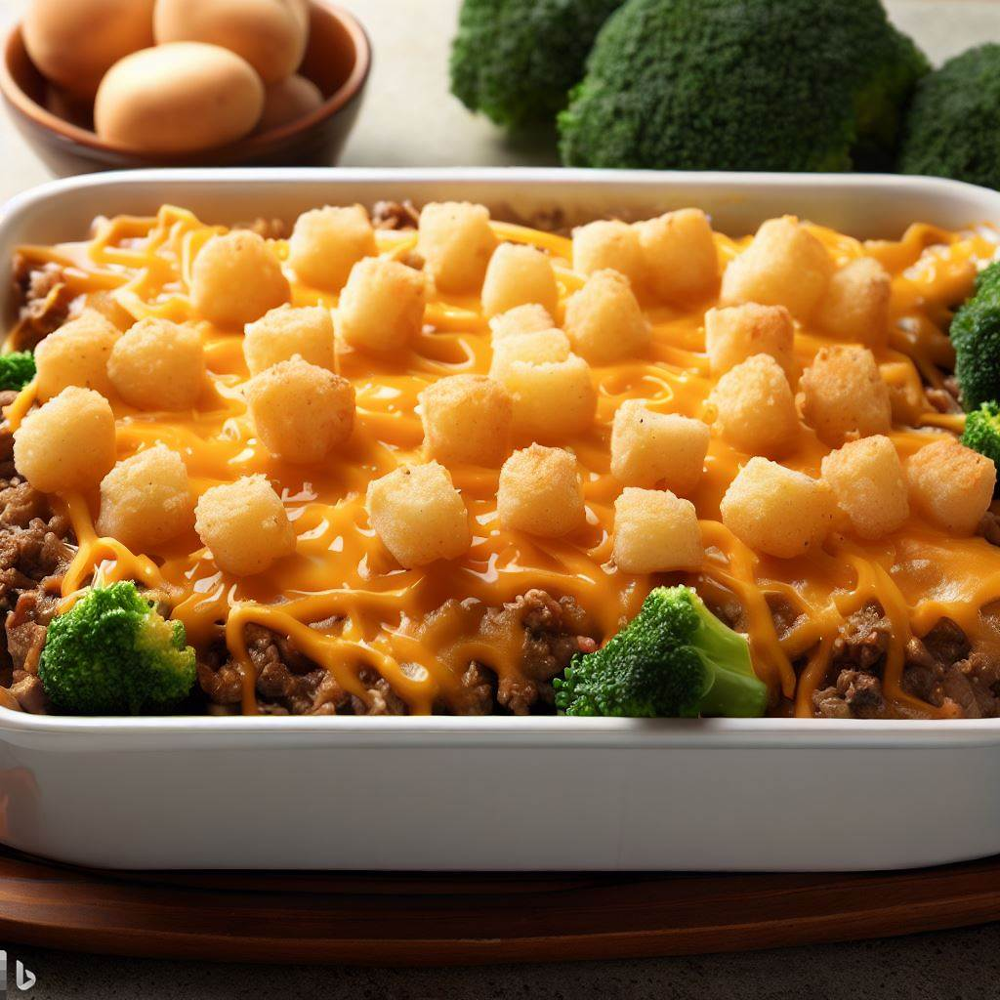

Poor Man's Casserole

Poor Man's Casserole is an affordable and easy casserole to make in a bind.
Ingredients
- 2lbs Ground Beef
- 1 Medium Onion
- 1 Bag Shredded Cheddar Cheese
- 1 Bag Frozen Broccoli
- Frozen Tater Tots
Directions
- Chop onion & mix in with beef on a stove-top pot.
- Once meat is browned and fully cooked, take off heat.
- In a casserole dish, layer meat, cheese, and broccoli until all ingredients are used up.
- Top casserole dish with cheese and cover entirely with tater tots.
- Bake at 350 for 35min or as needed for a brown, crispy tater tot.
- Enjoy!
Mom's Spaghetti
My Fajitas
Mom's Tacos